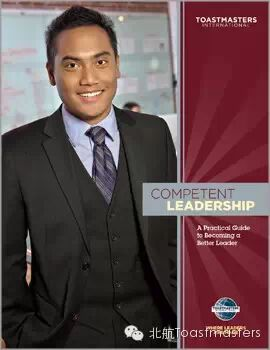
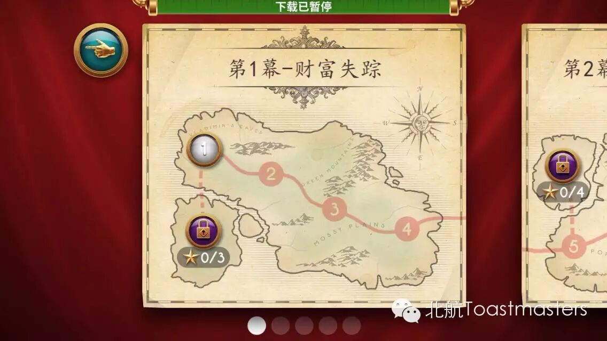
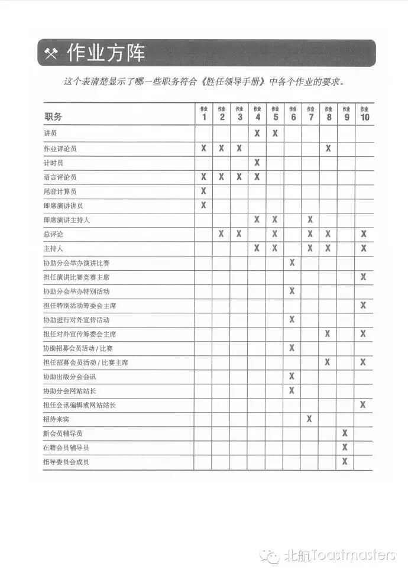
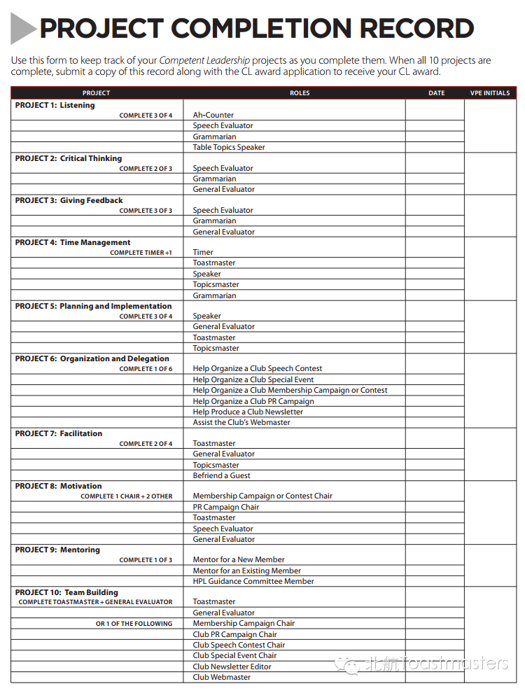

CL册的全称是Competent Leadership。
从名称来看，首先这本手册是用来指导Leadership的，也就是领导力。对于“领导力”有很多种解释，Leadership这个单词所包含的概念也非常多，通常我们认为当超过一个人在做事的时候，就会涉及到领导力，领导力是带领多人完成某件事的能力，一句话概括就是”all about how to lead people achieve something”
同时，书名中有一个Competent，意思是：具备必要能力的，能够胜任的。所以这本手册是关于领导力必备元素的指导。
在Toastmasters，学习领导力与学习演讲类似，是在积极的Club学习环境里，通过研读手册、实践和互助的方式学习、成长。每次Meeting就像是学习领导力及沟通技巧的工作坊，大家都抱着同样的目的，通过实践和评价他人来掌握各种技巧。

CL手册共有10个任务：聆听、批判性思维、反馈、时间管理、策划和实施、组织和授权、协调能力、激励、辅导、团队建设。
每个任务分别介绍了不同的领导技巧，包括背景知识和会员需要完成的目标。这些任务要求会员在例会或者俱乐部中担任一定的角色，认知并掌握某项技能。例如Toastmaster\Timer\Evaluator等，有些角色比较有挑战性。
在例会中，某些角色符合不同任务的要求。比如单元1、2、3、8中都有任务要求担任既定演讲的Evaluator。担任一次Evaluator只能算完成其中的一项任务，而不能完成四项，即每次角色实践，只能完成一项任务。
在会员担任各项角色的时候，可以请一名资深会员作为你的Observer，为你提供书面反馈，填写在CL手册上。该会员将针对你的表现，指出你的有点并提供帮助你改进的意见。Observer的目的就是帮助你更有效地提升领导力。
如何完成每次任务：
根据本次会议担任角色，对照任务表，找到要完成的工程
阅读任务要求
会上找一个Observer(观察员)给你填CL书

所有任务完成后申请CL：
完成CL书的PROJECT COMPLETION RECORD
将CL交给VPE
VPE确认无误后申请CL
坐等CL证书

补全CL书
前几次没写CL书的童鞋，可以找当天在会议的童鞋给你填。但是时间太久，记忆可能错位，问题估计就回答不上了。
公众号回复rolehis xxx查看已经担任过的角色，对应每次会议的具体日期。
rolehis Keven
希望大家养成填写CL手册的习惯，早日完成CL。